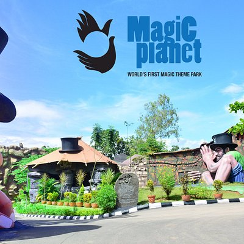

Evergreen city of India
Thiruvananthapuram (or Trivandrum) is the capital of the southern Indian state of Kerala. It's distinguished by its British colonial architecture and many art galleries. It’s also home to Kuthira Malika (or Puthen Malika) Palace, adorned with carved horses and displaying collections related to the Travancore royal family, whose regional capital was here from the 18th–20th centuries.
Top Destinations
Poovar Island
Unspoiled and unexplored, enveloped by the most serene backwaters, and opening out to the Arabian Sea and a dream golden sand beach, Poovar Island Resort is truly a window into paradise.

Magic Planet Theme Park
Magic Planet - the magic-themed complex - at the Kinfra Film and Video Park near Kazhakuttam, will facilitate an interesting journey, experiencing various eras of magic and exploring its rich history.

Sree Padmanabhaswamy Temple
The Padmanabhaswamy temple is a Hindu temple located in Thiruvananthapuram, the state capital of Kerala, India. The name of the city of Thiruvananthapuram in Malayalam translates to "The City of Lord Ananta", referring to the deity of the Padmanabhaswamy temple.
Kovalam Beach
Kovalam is an internationally renowned beach with three adjacent crescent beaches. It has been a favourite haunt of tourists since the 1930s. A massive rocky promontory on the beach has created a beautiful bay of calm waters ideal for sea bathing.

Attukal Bhagavathy Temple
The Attukal Bhagavathy Temple, one of the ancient temples of South India, is popularly described as Sabarimala of the Women, as women form the major portion of devotees. The Goddess in the temple of Attukal is worshipped as the Supreme Mother, creator of all living beings and the mighty preserver as well as destroyer of them all.

Thiruvananthapuram Zoo
Thiruvananthapuram Zoo is one of the oldest Zoo in India. Similarly the Museum and Botanical Gardens are also one of the oldest of their kind in the country. Swathi Thirunal Rama Varma (1816-1846), the ruler of Travancore during 1830-1846, was the visionary behind the establishment of the Thiruvananthapuram Museum and Zoo
Mall of Travancore
Mall of Travancore, a first-of-its-kind venture by Malabar Group introduces a complete mall experience to the capital city. Situated at NH bypass, Chakkai Junction, it is located right next to the international airport. Spread across 7 acres and a built up area of close to 7 lakh sq ft, the mall will have more than 300 brands in over 150 stores.

Vizhinjam Lighthouse
Vizhinjam Lighthouse is situated near Kovalam beach in Kerala. It started functioning on 30 June 1972. Vizhinjam was a busy seaport in the eighteenth and nineteenth centuries. Before the current light was installed, there were no lighthouses at this location.
Niyamasabha Mandiram
The Niyamasabha Mandiram, located in Palayam, Thiruvananthapuram, is the seat of the Kerala State Legislative Assembly or the Niyamasabha.

Napier Museum
In the heart of Thiruvananthapuram city lies the great Napier Museum and the Natural History Museum in the Museum compound, close to the Zoological park. Built in the 19th century, it has its own natural air-conditioning system. It contains a host of historical artefacts including bronze idols, ancient ornaments, a temple chariot and ivory carvings.